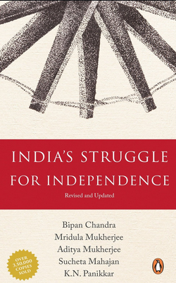

History
>


India's Struggle for Independ 1491: New Revelations of the
1776:America & Britain at war
The Guns of August
-ence
Americas Before Columbus
History is the study of change over time, and it covers all aspects of human society. Political,
social, economic, scientific, technological, medical, cultural, intellectual, religious and military
developments are all part of history. Usually professional historians specialize in a particular aspect of
history, a specific time period, a certain approach to history or a specific geographic region.
History also includes the academic discipline which uses narrative to describe, examine, question, and
analyze past events, and investigate their patterns of cause and effect.Historians often debate which
narrative best explains an event, as well as the significance of different causes and effects. Historians also
debate the nature of history as an end in itself, as well as its usefulness to give perspective on the
problems of the present.
Stories common to a particular culture, but not supported by external sources (such as the tales surrounding King Arthur),
are usually classified as cultural heritage or legends.History differs from myth in that it is supported
by evidence. However, ancient cultural influences have helped spawn variant interpretations of the nature of history
which have evolved over the centuries and continue to change today. The modern study of history is wide-ranging, and
includes the study of specific regions and the study of certain topical or thematic elements of historical
investigation. History is often taught as part of primary and secondary education, and the academic study of history
is a major discipline in university studies.